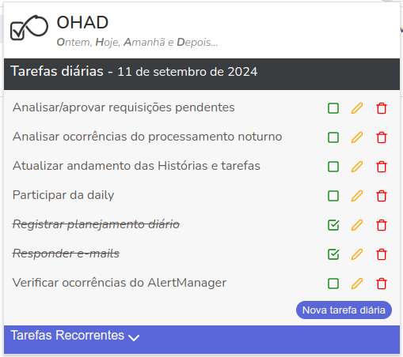

Clique em Tarefas Recorrentes para cadastrar aquelas tarefas que se repetem todo dia.
A cada novo dia, Ohad irá criar uma lista de tarefas diárias baseada nas tarefas recorrentes cadastradas para você controlar e marcar as que já foram concluídas.
Apareceu uma tarefa só para esse dia? Basta clicar em Nova tarefa diária e cadastrar. Essa tarefa não será recriada no dia seguinte.
